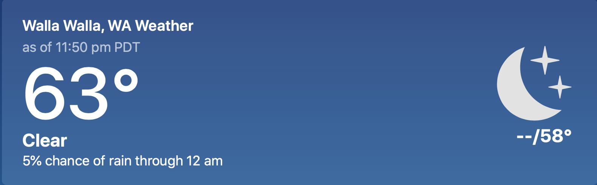

About
This is a project by Matthew DeChance for CPTR220 at Walla Walla University. The project will be creatign a virtual game shelf to catalog a persons board game colection. The user will be able to organize and interact with the data to rate, make notes, and track stats for each game they own. Work in progress as of 10/7/20.
Weather Info
Have you ever wondered if a storm will clear up soon, or if it will actually rain today? As soon as you want to do something the weather flips. Check the integrated weather widget to see what the forecast will be before starting that game of monopoly.
Stat Tracking
If you think you cant be beat at your favorite game, but have no way to prove it, fear not! Now you can input your wins and losses for each game into this and you will get a comparison of how often you win. Show off to your friends and prove to them that you have no life. are better than them. should go pro!